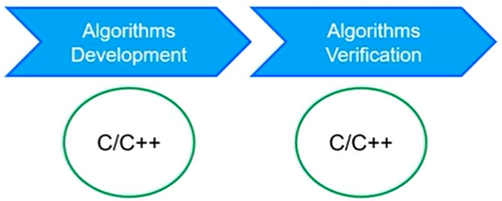
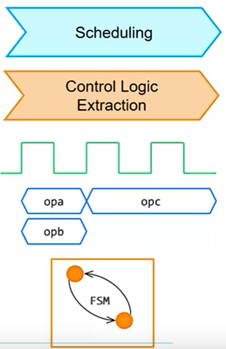

Vivado HLS的工作原理
EDA领域的发展历史
CAD -> CAE -> EDA
- Computer Aided Design
- Computer Aided Engineering
- Electronic Design Automation
- 在EDA阶段最典型的特征就是出现了HDL（硬件描述语言），例如VHDL和Verilog
ESL（Electronic System Level）
- 在ESL这个阶段希望采用具有更高抽象度的方式去描述系统行为
两个最为显著的系统特征
1、使用高层次语言描述系统行为，比如C/C++，工具比如赛灵思的Vivado HLS
2、 使用基于模型的设计工具，比如赛灵思的System Generator
采用高层次综合的好处
对于硬件工程师而言可以提高生产率
硬件工程师通常在EDA阶段采用VHDL或者Verilog，这种硬件语言有时序和并行性这两个最为显著的特征，时序是人为设计出来的，而且在时序设计这个阶段是比较困难且耗费人力的一个过程，并行性反映了VHDL和Verilog的一个本质，这些语言所谓的硬件描述描述的是电路，每条语句都会和相应的电路对应，而在C/C++层面，更多的是关注算法本身，可以高效的把算法用C/C++描述出来，然后把转换的过程用工具来完成，这就需要用到HLS工具。
对于软件工程师而言可以提高系统的性能
因为以前需要采用CPU、DSP或者GPU实现的一些算法，现在都可以采用FPGA来进行实现，一方面提高了整个系统的并行性，实际上也就是提高了系统的吞吐率，另一方面对于改善功耗也是很有意义的。
在C/C++层面对算法进行开发
在C/C++层面对算法进行验证
有了HLS高层次综合工具就可以在C/C++层面进行算法的开发和验证，可以通过一些指导综合工具进行优化指导，将C/C++描述的算法更高效的转化为HDL代码（VHDL或者Verilog代码）

特别强调的一点是在这个过程中我们不仅是用C/C++语言进行算法的开发，同样也是使用C/C++语言进行算法的验证，所以我们在描述好一个算法后一定会有相应的测试文本（测试程序）去测试我们的描述出来的算法是否可以正常工作，是否符合我们期望的要求，其实生成的HDL代码在验证的时候也会使用到C/C++写的测试程序
从这个角度而言，Vivado HLS生成的HDL代码并不是让我们去看懂的，我们不需要去把它看懂，因为通过对生成的代码进行阅读发现，HLS自动生成的代码并不具备很高的可读性，因此如果我们需要让生成的HDL代码能够高效的运行，一个是我们可以在C/C++层面上对我们的算法做更多的优化，另一个我们可以对综合工具采用一些指导方法。
生成的HDL代码我们很难对其进行优化，效果也不好。
在Vivado HLS中进行高级综合的几个阶段
Vivado HLS的综合过程，也就是把C/C++转化成HDL代码的过程，会有以下这几个阶段：

调度（Scheduling） -> 控制逻辑的提取（Control Logic Extraction）
这两个阶段描述的是每个时钟周期应该做的操作，同时还要描述这个操作需要几个时钟周期来完成，以及描述有些操作是否可以并行来执行；提取控制逻辑通常会生成状态机，这个在HDL代码中也能看得到
再接下来的过程是Binding，意思就是每个操作需要用什么样的资源去实现，完成的是映射的过程。
例子
1 |
|
在这个例子中，实现的就是y = x * a + b + c
调度（Scheduling）的过程就是在第一个时钟周期执行a*x+b，第二个时钟周期执行的是前一个时钟周期的结果和c相加
Binding的过程就是描述在这个时钟周期需要什么资源，如图所示，第一个时钟周期中需要乘法器和加法器，最终映射为DSP48，在第二个时钟周期中只需要加法器，这里的加法器通过查找表实现。
这个算法本身比较简单，所以没有涉及到控制逻辑的提取（Control Logic Extraction）
控制逻辑的提取（Control Logic Extraction）举例
1 |
|
跟上一个例子相比，x变成了一维数组，因此要用for循环

控制逻辑会形成一个状态机，比如在C0状态下，会执行b + c的操作，因为在这个过程中b + c的结果是固定的，不需要每次for循环都变化，在C1状态下会产生xi的地址和yi的地址，在C2状态会执行* +操作，C3状态会把结果写入到y数组，然后进行循环，循环得过程中判断i是否达到边界，

Vivado HLS也会给一个控制状态（上图左下），但是这个控制状态跟状态机并不是一一对应得，但是会比较接近，他们之间有紧密得关系
矩阵相加的例子
算法流程图：
代码：
1 |
|
其中有row和col标记，后边会介绍，尤其是在对for循环进行优化时，这个标记是很重要的。
有了这个代码，Vivado HLS就会生成一个控制状态过程
其实这个状态过程是可以通过流程图转化过来的，因此有了流程图以后，基本也就知道状态过程是如何进行的，也就是从算法流程图到状态机的过程是人工可以完成的，只是有的会很复杂，在这里Vivado HLS完成了这个过程。
- Vivado HLS的两个过程：调度（Scheduling）/ 控制逻辑的提取（Control Logic Extraction），binding
- 算法流程图能够帮助分析Vivado HLS生成的控制状态
- 控制状态在Vivado HLS内部是去控制哪个操作在哪个时钟周期执行
- 所以他跟HDL代码生成的有限状态机并非一一对应，但是有很紧密的关系
所以从Vivado HLS工作的原理来分析，它其实是类似于我们把我们自己的算法流程图转换为有限状态机的一个过程，他是通过有限状态机控制算法的进程，因此用Vivado HLS的思想是靠谱的。